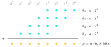

multiplication sums
multiplication sums  , each a row of AND gates; an array of carry-save adders reduces them in
, each a row of AND gates; an array of carry-save adders reduces them in Construction
- Array multiplier:
 rows of AND gates, rows of adders, each row adding the next partial product to the running sum in carry-save form; regular layout, delay full adders. Area .
rows of AND gates, rows of adders, each row adding the next partial product to the running sum in carry-save form; regular layout, delay full adders. Area . - Tree multiplier: all partial products at once into a Wallace or Dadda tree,
 levels, then a fast carry-propagate adder.
levels, then a fast carry-propagate adder. - Radix-4 Booth: recode
 into digits in by looking at overlapping bit triples;
into digits in by looking at overlapping bit triples;  partial products, each a shifted or negated copy of
partial products, each a shifted or negated copy of  . It also handles two's complement multipliers directly.
. It also handles two's complement multipliers directly. - Sequential: one adder and a shift register: cycles,
 area.
area.
Picture

Four shifted rows of partial products (dots) summed into an 8-bit product.
Intuition
School multiplication in binary is easy — each row is or zero — and the whole difficulty is adding the rows fast.
Pitfall
Signed operands need care: two's complement partial products must be sign-extended (or use Baugh–Wooley/Booth), otherwise the high half of the product is wrong.